🚨 Mission 03: Multi-Agent Systems¶
Warning
This course is still in development. That means that the quality is not up to par yet or that it doesn't work as intended.
🕵️♂️ CODENAME: OPERATION SYMPHONY¶
⏱️ Operation Time Window:
~45 minutes
🎯 Mission Brief¶
Welcome back, Agent. In Mission 01, you built your main Hiring Agent giving you a solid foundation for managing recruitment workflows. But one agent can only do so much.
Your assignment, should you choose to accept it, is Operation Symphony - transforming your single agent into a multi-agent system: an orchestrated team of specialized agents that work together to handle complex hiring challenges. Think of it as upgrading from a solo operator to commanding a specialized task force.
Like a symphony orchestra where each musician plays their part in perfect harmony, you'll add two critical specialists to your existing Hiring Agent: an Application Intake Agent to process resumes automatically, and an Interview Prep Agent to create comprehensive interview materials. These agents will work together seamlessly under your main orchestrator.
🔎 Objectives¶
In this mission, you'll learn:
- When to use child agents vs connected agents
- How to design multi-agent architectures that scale
- Creating child agents for focused tasks
- Establishing communication patterns between agents
- Building the Application Intake Agent and Interview Prep Agent
🧠 What are connected agents?¶
In Copilot Studio, you're not limited to building single, monolithic agents. You can create multi-agent systems - networks of specialized agents that work together to handle complex workflows.
Think of it like a real-world organization: instead of one person doing everything, you have specialists who excel at specific tasks and collaborate when needed.
Why multi-agent systems matter¶
- Scalability: Each agent can be developed, tested, and maintained independently by different teams.
- Specialization: Agents can focus on what they do best. Perhaps one for data processing, another for user interaction, another for decision-making.
- Flexibility: You can mix and match agents, reuse them across projects, and evolve your system incrementally.
- Maintainability: Changes to one agent don't necessarily affect others, making updates safer and easier.
Real-world example: Hiring process¶
Consider our hiring workflow - multiple agents might work together with the following responsibilities:
- Resume intake requires document parsing and data extraction skills
- Scoring involves evaluating candidate resumes and matching them to job requirements
- Interview preparation needs deep reasoning about candidate fit
- Candidate communication requires empathetic communication abilities
Rather than building one massive agent that tries to handle all these different skills, you can create specialized agents for each area and orchestrate them together.
🔗 Child agents vs connected agents: The key difference¶
Copilot Studio offers two ways to build multi-agent systems, each with distinct use cases:
↘️ Child agents¶
Child agents are lightweight specialists that live within your main agent. Think of them as specialized teams within the same department.
Key technical details¶
- Child agents live within the parent agent and have a single configuration page.
- Tools and Knowledge are stored at the parent agent, but configured to be "Available to" the child agent.
- Child agents share the topics of their parent agent. Topics can be referenced by the child agent instructions.
- Child agents don't need separate publishing - they're automatically available within their parent agent once created. This makes testing easier because changes to the parent and child agents can be performed in the same shared workspace.
Use child agents when¶
- A single team manages the entire solution
- You want to logically organize tools and knowledge into sub-agents
- You don't need separate authentication or deployment for each agent
- The agents won't be published separately or used independently
- You don't need to reuse agents across multiple solutions
Example: An IT helpdesk agent with child agents for:
- Password reset procedures
- Hardware troubleshooting
- Software installation guides
🔀 Connected agents¶
Connected agents are full-fledged, independent agents that your main agent can collaborate with. Think of them as separate departments working together on a project.
Key technical details¶
- Connected agents have their own topics and conversation flows. They operate independently with their own settings, logic, and deployment lifecycle.
- Connected agents must be published before they can be added to and used by other agents.
- During testing, changes to the connected agent must be published before they can be used by the calling agent.
Use connected agents when¶
- Multiple teams develop and maintain different agents independently
- Agents need their own settings, authentication, and deployment channels
- You want to publish and maintain agents separately with independent application lifecycle management (ALM) for each agent
- Agents should be reusable across multiple solutions
Example: A customer service system that connects to:
- A separate billing agent maintained by the finance team
- A separate technical support agent maintained by the product team
- A separate returns agent maintained by the operations team
Tip
You can mix both approaches! For example, your main agent could connect to external agents from other teams while also having its own child agents for specialized internal tasks.
🎯 Multi-agent architecture patterns¶
When designing multi-agent systems, several patterns emerge based on how agents interact:
| Pattern | Description | Best For |
|---|---|---|
| Hub and Spoke | A main orchestrator agent coordinates with multiple specialized agents. The orchestrator handles user interaction and delegates tasks to child or connected agents. | Complex workflows where one agent coordinates specialized tasks |
| Pipeline | Agents pass work sequentially from one to the next, each adding value before passing to the next stage. | Linear processes like application processing (intake → screening → interview → decision) |
| Collaborative | Agents work together simultaneously on different aspects of the same problem, sharing context and results. | Complex analysis requiring multiple perspectives or expertise areas |
Tip
You may even have a hybrid of two or more of these patterns.
💬Agent communication and context sharing¶
When agents work together, they need to share information effectively. Here's how this works in Copilot Studio:
Conversation history¶
By default, when a main agent calls a child or connected agent, it can pass along the conversation history. This gives the specialist agent full context about what the user has been discussing.
You can disable this for security or performance reasons - for example, if the specialist agent only needs to complete a specific task without needing the full conversation context. This can be a good defense against data leakage.
Explicit instructions¶
Your main agent can give specific instructions to child or connected agents. For example: "Process this resume and summarize their skills for the Senior Developer role."
Return values¶
Agents can return structured information back to the calling agent, allowing the main agent to use that information in subsequent steps or share it with other agents.
Dataverse integration¶
For more complex scenarios, agents can share information through Dataverse or other data stores, allowing for persistent context sharing across multiple interactions.
↘️Child agent: Application Intake Agent¶
Let's start building our multi-agent hiring system. Our first specialist will be the Application Intake Agent - a child agent responsible for processing incoming resumes and candidate information.
---
config:
layout: elk
look: neo
---
flowchart TB
subgraph People["People"]
direction TB
HiringManager["Hiring Manager"]
Interviewers["Interviewers"]
end
subgraph Agents["Agents"]
direction LR
ApplicationIntakeAgent["Application Intake Agent<br>(Child)"]
InterviewAgent["Interview Agent<br>(Connected)"]
HRAgent["HR Agent"]
end
HiringManager -- Upload CV --> HRAgent
HRAgent -- Upload Resume, Create Candidate, Match to Job Roles --> ApplicationIntakeAgent
ApplicationIntakeAgent -- Create Resume, Upsert Candidate, Create Job Application --> Dataverse["Dataverse"]
ApplicationIntakeAgent -- Store Resume file in file column --> Dataverse
HiringManager -- Ask for summaries --> HRAgent
Interviewers -- Request interview pack --> HRAgent
HRAgent -- Generate interview pack and summarize data --> InterviewAgent
InterviewAgent -- Read all Candidate, Resume, Job Roles, Evaluation Criteria Data --> Dataverse
HiringManager:::person
Interviewers:::person
ApplicationIntakeAgent:::agent
InterviewAgent:::agent
HRAgent:::agent
Dataverse:::data
classDef person fill:#e6f0ff,stroke:#3b82f6,color:#0b3660
classDef agent fill:#e8f9ef,stroke:#10b981,color:#064e3b
classDef data fill:#f3f4f6,stroke:#6b7280,color:#111827🤝Application Intake Agent responsibilities¶
- Parse resume content from PDFs provided via interactive chat (In a future mission you'll learn how to process resumes autonomously).
- Extract structured data (name, skills, experience, education)
- Match candidates to open roles based on qualifications and cover letter
- Store candidate information in Dataverse for later processing
- Deduplicate applications to avoid creating the same candidate twice, match to existing records using the email address extracted from the resume.
⭐Why this should be a child agent¶
The Application Intake Agent fits perfectly as a child agent because:
- It's specialized for document processing and data extraction
- It doesn't need separate publishing
- It's part of our overall hiring solution managed by the same team
- It focuses on a specific trigger (new resume received) and is invoked from the Hiring Agent.
🔀Connected agent: Interview Prep Agent¶
Our second specialist will be the Interview Prep Agent - a connected agent that helps create comprehensive interview materials and evaluates candidate responses.
🤝Interview Prep Agent responsibilities¶
- Create interview packs with company information, role requirements, and evaluation criteria
- Generate interview questions tailored to specific roles and candidate backgrounds
- Answer general questions about the job roles and applications for stakeholder communication
⭐Why this should be a connected agent¶
The Interview Prep Agent works better as a connected agent because:
- The talent acquisition team might want to use it independently across multiple hiring processes
- It needs its own knowledge base of interview best practices and evaluation criteria
- Different hiring managers might want to customize its behavior for their teams
- It could be reused for internal positions, not just external hiring
🧪Lab 3.1: Adding the Application Intake Agent¶
Ready to put theory into practice? Let's add our first child agent to your existing Hiring Agent.
Prerequisites to complete this mission¶
To complete this mission you need to:
- Have completed Mission 01 and have your Hiring Agent ready
3.1.1 Solution setup¶
- Inside Copilot Studio, select the ellipsis (...) below Tools in the left hand navigation.
- Select Solutions.
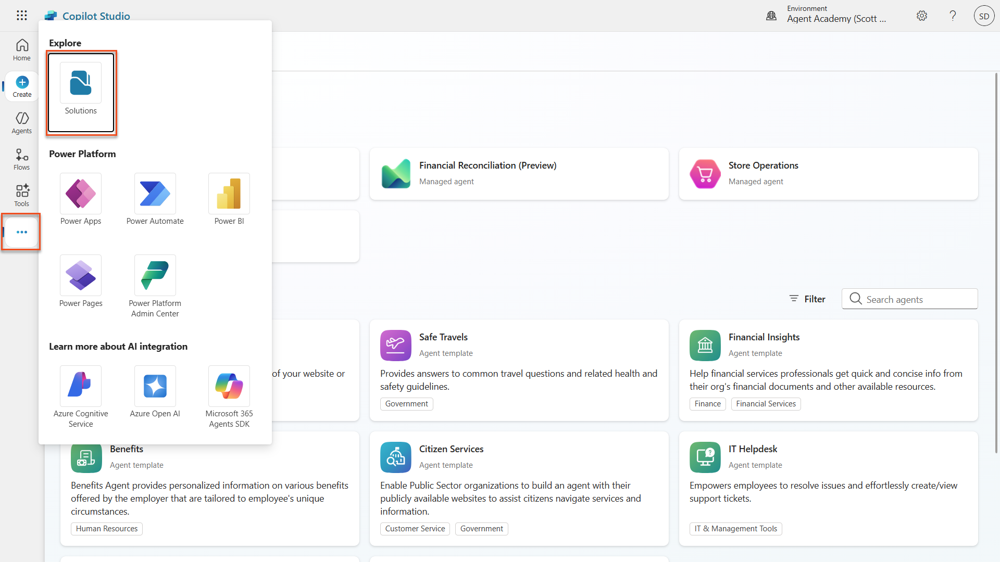 - Locate your Operative solution, select the ellipsis (...) next to it, and choose Set preferred solution. Select Apply in the dialogue box that pops up. This will ensure that all your work will be added to this solution.

3.1.2 Configure your Hiring Agent agent instructions¶
-
Navigate to Copilot Studio. Ensure your environment is selected in the top right Environment Picker.
-
Open your Hiring Agent from Mission 01
-
Select Edit in the Instructions section of the Overview tab of the agent.
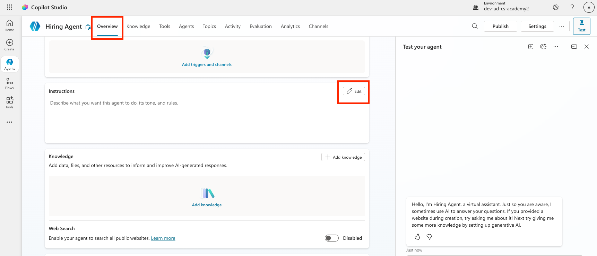
Copy and paste the following instructions in the instructions input:
-
Select Save

-
Select the Settings button in the top right of the screen

-
Review the page and ensure the following settings are applied:
Setting Value Use generative AI orchestration for your agent's responses Yes Deep Reasoning Off Let other agents connect to and use this one On Continue using retired models Off Content Moderation Moderate Collect user reactions to agent messages On Use general knowledge Off Use information from the Web Off File uploads On Code Interpreter Off
 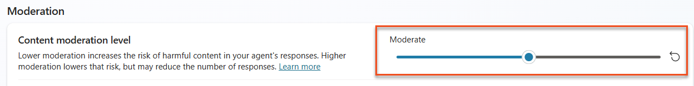
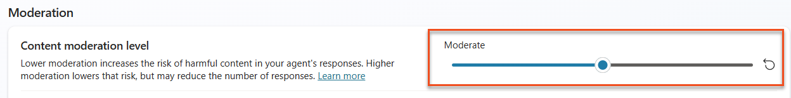
- Click Save

- Click the X in the upper right hand corner to close out of the settings menu

3.1.3 Add the Application Intake child agent¶
- Navigate to the Agents tab within your Hiring Agent (this is where you'll add specialist agents) and select Add.
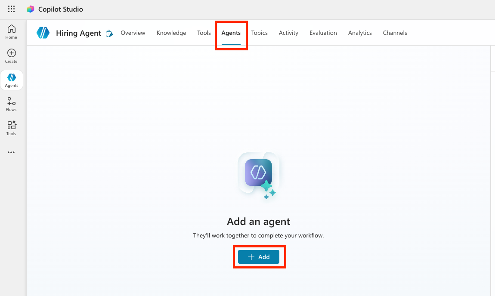
-
Select New child agent.
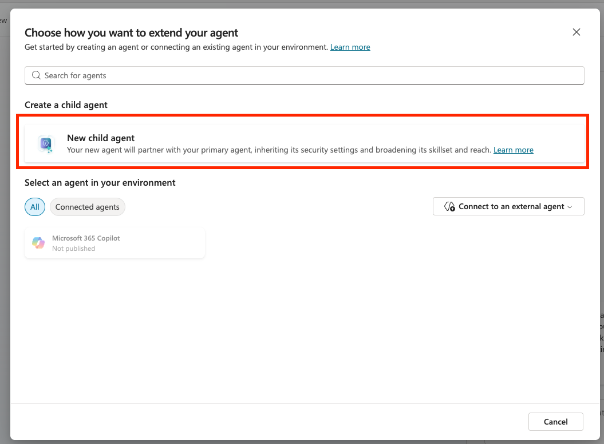
-
Name your agent
Application Intake Agent -
Select The agent chooses - Based on description in the When will this be used? dropdown. These options are similar to the triggers that can be configured for topics.
-
Set the Description to be :

-
Expand Advanced, and set the Priority to be
10000. This will ensure that later the Interview Agent will be used to answer general questions before this one. A condition could be set here as well such as ensuring that there is at least one attachment.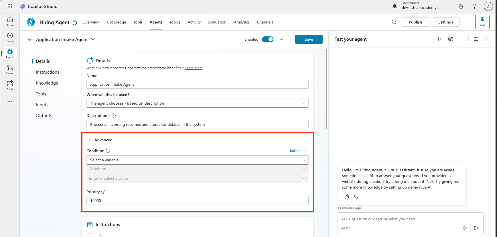
-
Ensure that the toggle Web Search is set to Disabled. This is because we only want to use information provided by the parent agent.
-
Select Save

3.1.4 Configure Resume Upload agent flow¶
Agents can't perform any actions without being given tools or topics.
We're using Agent Flow tools rather than Topics for the Upload Resume step because this multi-step backend process requires deterministic execution and integration with external systems. While Topics are best for guiding the conversational dialog, Agent Flows provide the structured automation needed to reliably handle file processing, data validation, and database upserts (insert new or update existing) without depending on user interaction.
-
Locate the Tools section inside the Application Intake Agent page. Important: This isn't the Tools tab of the parent agent, but can be found if you scroll down underneath the child agent instructions.
-
Select + Add

-
Select + New tool

-
Select Agent flow. The Agent Flow designer will open, this is where we will add the upload resume logic.

-
Select the When an agent calls the flow node, and select + Add an input
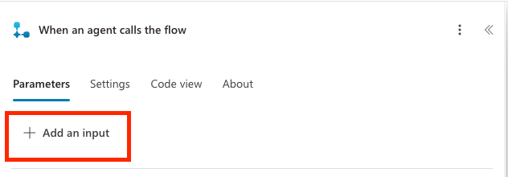
-
Add inputs for each of the following Parameters listed in the table below. Select the appropriate input type as shown in the table and be sure to add both the name and the description. It's important to include the description because it will help the agent know what to fill in the input.
Type Name Description File ResumeThe Resume PDF fileText MessageExtract a cover letter style message from the context. The message must be less than 2000 characters.Text UserEmailThe email address that the Resume originated from. This will be the user uploading the resume in chat, or the from email address if received by email.
-
Select the + icon below the when an agent calls the flow node and search for
Dataverse add,then select the Add a new row action in the Microsoft Dataverse section

Note: You may be prompted to create a new connection to Dataverse after you add the action. Enter any name for the connection and click add to create that connection.
-
Name the node Create Resume, by selecting the Add a new row node, and replacing the tile as shown 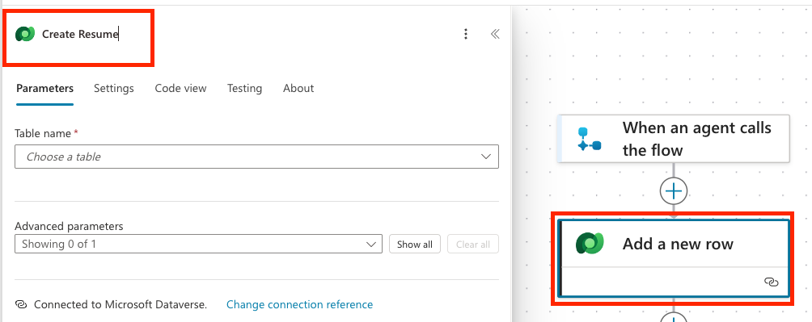
-
Set the Table name to Resumes, then select Show all, to show all the parameters.
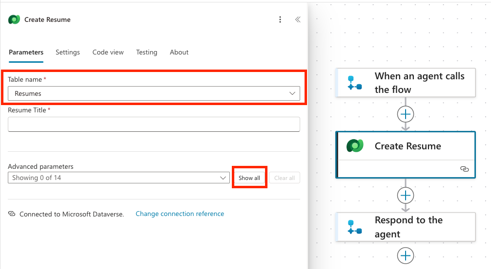
-
Set the following properties:
Property How to Set Details / Expression Resume Title Dynamic data (thunderbolt icon) When an agent calls the flow → Resume name If you don't see the Resume name, make sure you have configured the Resume parameter above as a data type. Cover letter Expression (fx icon) if(greater(length(triggerBody()?['text']), 2000), substring(triggerBody()?['text'], 0, 2000), triggerBody()?['text'])Source Email Address Dynamic data (thunderbolt icon) When an agent calls the flow → UserEmail Upload Date Expression (fx icon) utcNow()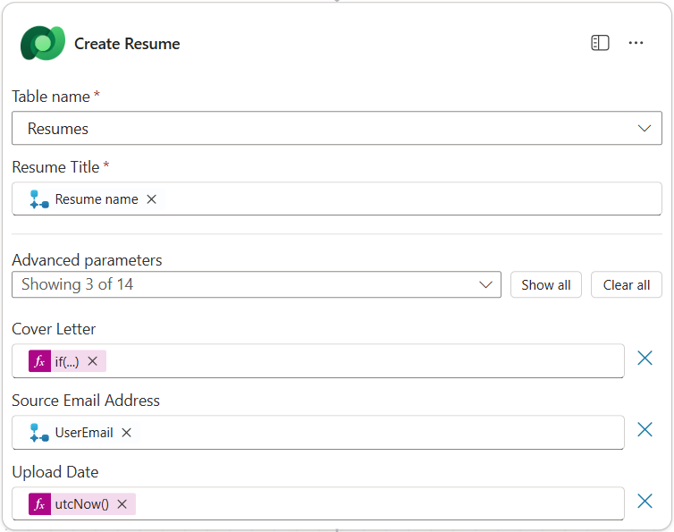
-
Select the + icon below the Create Resume node, search for
Dataverse uploadand select the Upload a file or an image action.
Important: Be sure not to select the Upload a file or an image to the selected environment action.
-
Name the node to Upload Resume File
-
Set the following properties:
Property How to Set Details Content name Dynamic data (thunderbolt icon) When an agent calls the flow → Resume name Table name Select Resumes Row ID Dynamic data (thunderbolt icon) Create Resume → See more → Resume Column Name Select Resume PDF Content Dynamic data (thunderbolt icon) When an agent calls the flow → Resume contentBytes 
-
Select the Respond to the agent node, and then select + Add an output. Create an output with the properties defined in the table below:
Property How to Set Details Type Select TextName Enter ResumeNumberValue Dynamic data (thunderbolt icon) Create Resume → See More → Resume Number Description Enter The [ResumeNumber] of the Resume created
-
Select Save draft on the top right

-
Select the Overview tab, Select Edit on the Details panel. Fill in the name and description as shown below and select Save
- Flow name:
Resume Upload - Description:
Uploads a Resume when instructed

- Flow name:
-
Select the Designer tab again, and select Publish.
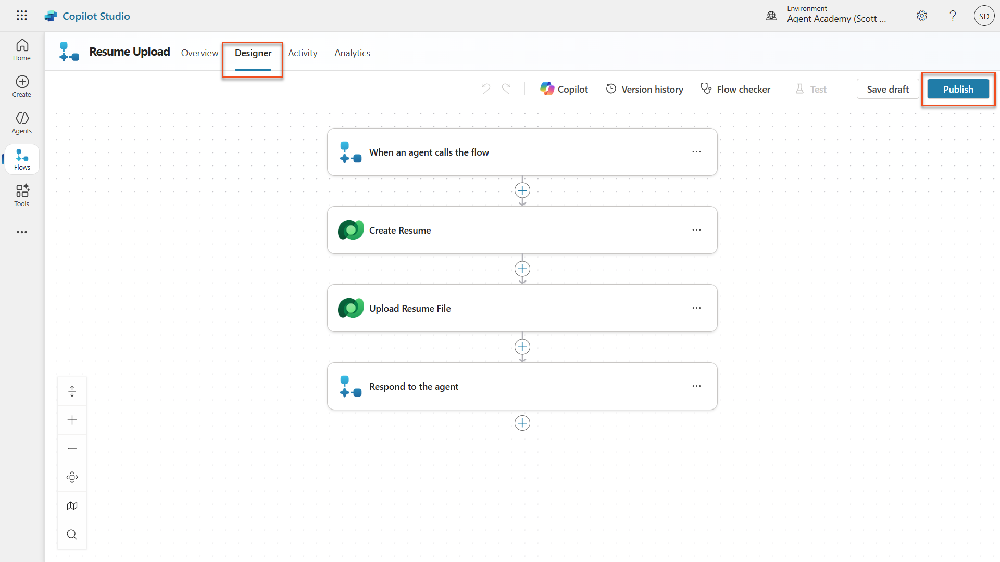
3.1.5 Connect the flow to your agent¶
Now you'll connect the published flow to your Application Intake Agent.
-
Navigate back to the Hiring Agent and select the Agents tab. Open the Application Intake Agent, and then locate the Tools panel.
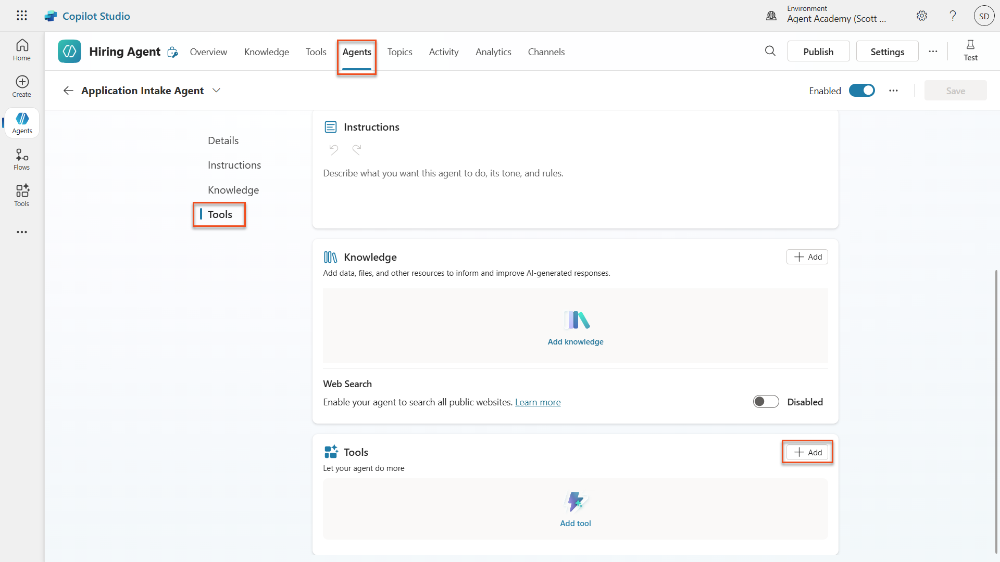 -
Select + Add
-
Select the Flow filter, and search for
Resume Upload. Select the Resume Upload flow.
-
Select Add and configure.
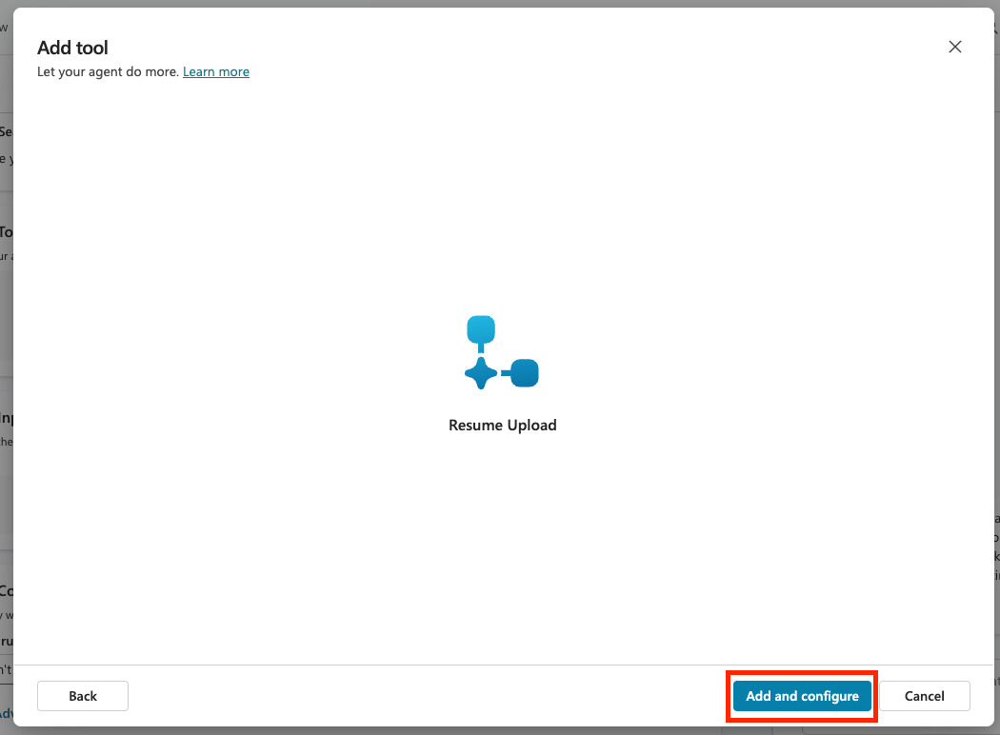
-
Set the following parameters for the description and when the tool should be used:
Parameter Value Description Uploads a Resume when instructed. STRICT RULE: Only call this tool when referenced in the form "Resume Upload" and there are AttachmentsAdditional details → When this tool may be used only when referenced by topics or agents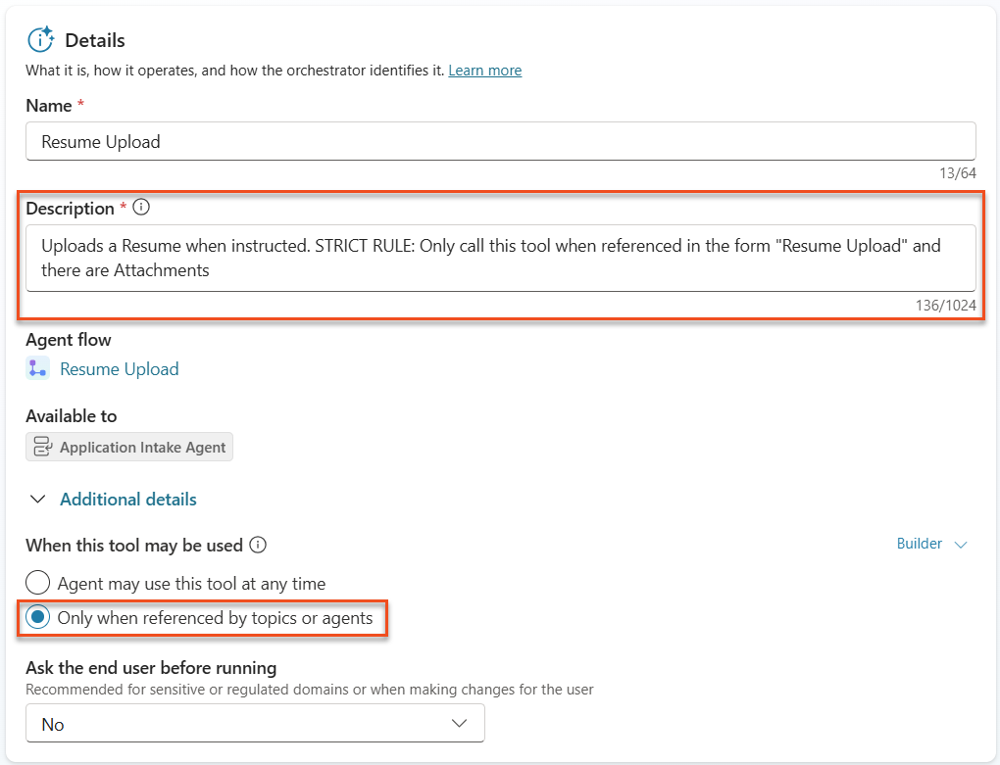
Note: This description tells the agent when it should call this tool. Notice the use of "strict rule" in the description. This gives a way to provide additional guardrails on when the tool should be used, in this case, only if there are attachments and the context of the conversation is a resume upload. Choosing when this tool can be used is important as well. Since we are building a multi-agent system and we have a child agent, we want to be sure this tool is ONLY called in the child agent, not the main agent. Setting tha value to "only when referenced by topics or agents" ensure this.
-
Scroll down to the inputs section and select Add Input to add the following inputs:
Parameter Value Inputs → Add Input contentBytesInputs → Add Input name
-
Now we need to set the properties of the inputs. We'll start with the contentBytes input which will store the actual resume file. Select Custom value from the Fill using dropdown next to the contentBytes input.
-
In the Value property, select the three dots (...) and select the Formula tab. Paste in the following formula which extracts the file from the chat and click the Insert button.
First(System.Activity.Attachments).Content 1. Now we'll configure the name input which will store the name of the resume file. This will be hard coded as well so select the Custom value option in the Fill using column.
1. Select the three dots (...) in the Value column and paste in the following formula which extracts the file name from the chat and click the Insert button.
1. Now we'll configure the name input which will store the name of the resume file. This will be hard coded as well so select the Custom value option in the Fill using column.
1. Select the three dots (...) in the Value column and paste in the following formula which extracts the file name from the chat and click the Insert button.First(System.Activity.Attachments).Name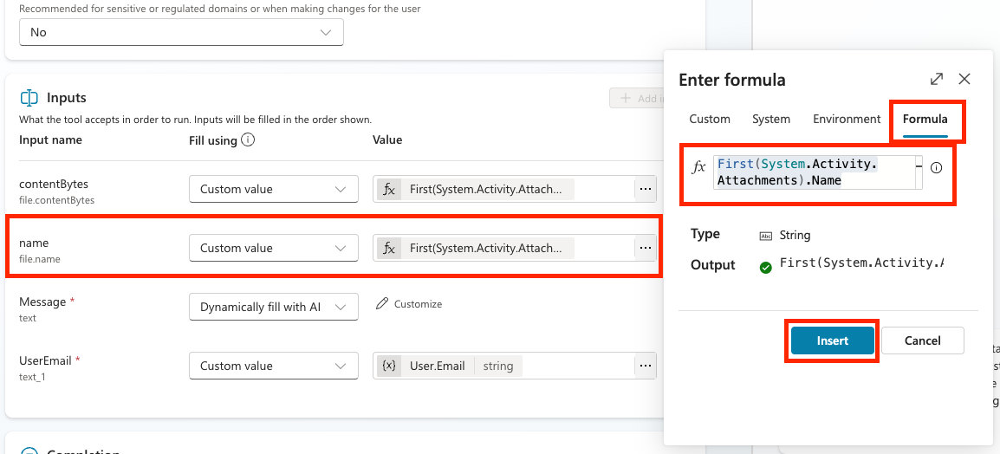 1. Now we'll configure the Message input. We want to fill this one dynamically with AI so we'll leave the fill using as-is. Select the Customize button in the Value column so we can fill out additional details for how this should be filled.
 1. Enter the following in the Description field for the input:
1. Enter the following in the Description field for the input:Extract a cover letter style message from the context. Be sure to never prompt the user and create at least a minimal cover letter from the available context. STRICT RULE - the message must be less than 2000 characters.NOTE: Filling in the description for your dynamically filled inputs is a crucial step to ensure that your agent knows how to fill in the input correctly.
-
Expand out the Advanced section to configure some additional properties for this input. In the How many reprompts section, select Don't repeat

NOTE: This setting helps you customize your user experience so the agent doesn't ask the same question multiple times if it can't identify the data it needs.
-
Scroll down to the No valid entity found section. Select the Set variable to value option in the Action if no entity found dropdown. Type
Resume uploadin the Default entity value input.
NOTE: This setting lets us hard code a backup value if the agent is unable to dynamically fill this message input.
-
We'll fill the UserEmail input by selecting the Custom value option in the Fill using column and select the three dots (...) in the Value column. Select the System tab and search for User. Select the User.Email variable to get the email of the person using the agent

-
Select Save

3.1.6 Define agent instructions¶
-
Move back in to the Application Intake Agent by selecting the Agents tab, selecting the Application Intake Agent, and locating the Instructions panel.
-
In the Instructions field, paste the following clear guidance for your child agent:
You are tasked with managing incoming Resumes, Candidate information, and creating Job Applications. Only use tools if the step exactly matches the defined process. Otherwise, indicate you cannot help. Process for Resume Upload via Chat 1. Upload Resume - Trigger only if /System.Activity.Attachments contains exactly one new resume. - If more than one file, instruct the user to upload one at a time and stop. - Call /Upload Resume once. Never upload more than once for the same message. 2. Post-Upload - Always output the [ResumeNumber] (R#####). -
Where the instructions include a forward slash (/), select the text following the / and select the resolved name. Do this for:
System.Activity.Attachments(Variable)Upload Resume(Tool)

-
Select Save
3.1.7 Test your Application Intake Agent¶
Now let's verify that our agent is working correctly by calling our child agent and following our instructions.
-
Download the test Resumes.
-
Toggle the test panel open by selecting Test.
-
Upload two Resumes in the test chat, and give the message
Process these resumes- The agent should return a message similar to Only a single resume can be uploaded at a time. Please upload one resume to proceed. This is because in our instructions, we told the agent to only process one resume at a time so our instructions are working correctly!

-
Now, try uploading just one Resume, with the message
Process this resume- The agent should then give a message similar to The resume for Avery Example has been successfully uploaded. The resume number is R10026.
-
In the Activity map, you should see the Application Intake Agent handling the resume upload.

-
Navigate to make.powerapps.com → Ensure your environment is selected in the top right Environment Picker.
-
Select Apps → Hiring Hub → ellipsis(...) menu → Play

Note: If the play button is greyed out it means you have not published your solution from Mission 01. Select Solutions → Publish all customizations.
-
Navigate to Resumes, and check that the resume file is uploaded and the cover letter is set accordingly.

🧪Lab 3.2: Adding the Interview Prep connected agent¶
Now let's create our connected agent for interview preparation and add it to your existing Hiring Agent.
3.2.1 Create the connected Interview Agent¶
-
Navigate to Copilot Studio. Ensure your environment is still selected in the top right Environment Picker.
-
Select the Agents tab in the left navigation and select New Agent

-
Select the Configure tab, and enter the following properties:
- Name:
Interview Agent - Description:
Assists with the interview process.
- Name:
-
Instructions:
You are the Interview Agent. You help interviewers and hiring managers prepare for interviews. You never contact candidates. Use Knowledge to help with interview preparation. The only valid identifiers are: - ResumeNumber (ppa_resumenumber)→ format R##### - CandidateNumber (ppa_candidatenumber)→ format C##### - ApplicationNumber (ppa_applicationnumber)→ format A##### - JobRoleNumber (ppa_jobrolenumber)→ format J##### Examples you handle - Give me a summary of ... - Help me prepare to interview candidates for the Power Platform Developer role - Create interview assistance for the candidates for Power Platform Developer - Give targeted questions for Candidate Alex Johnson focusing on the criteria for the Job Application How to work: You are expected to ask clarification questions if required information for queries is not provided - If asked for interview help without providing a job role, ask for it - If asking for interview questions, ask for the candidate and job role if not provided. General behavior - Do not invent or guess facts - Be concise, professional, and evidence-based - Map strengths and risks to the highest-weight criteria - If data is missing (e.g., no resume), state what is missing and ask for clarification - Never address or message a candidate -
Toggle Web Search to Disabled
-
Select the three dots (...) in the upper right hand corner and select Update advanced settings.
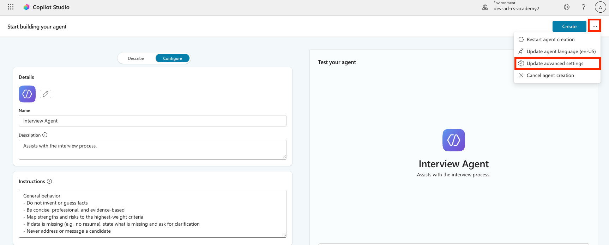
-
Select Operative in the Solution dropdown to make sure that this is added to the correct solution and select Update

-
Select Create

3.2.2 Configure data access and publish¶
- In the Knowledge section, select + Add knowledge

- Select Dataverse

- In the Search box, type
ppa_. This is the prefix for the tables you imported previously in Module 01. - Select all 5 tables (Candidate, Evaluation Criteria, Job Application, Job Role, Resume)
- Select Add to agent

-
Select the Settings button in the upper right hand corner

-
Ensure that the following settings are configured:
- Let other agents connect to and use this one:
On - Use general knowledge:
Off - File uploads:
Off - Content moderation level:
Medium - Select Save and select the X in the upper right hand corner to close out of the settings menu.

- Let other agents connect to and use this one:
-
Select Publish, and wait for the publishing to complete.

3.2.3 Connect the Interview Prep Agent to your Hiring Agent¶
-
Navigate back to your Hiring Agent
-
Select the Agents Tab
-
Selected +Add an agent and selected the Interview Agent.
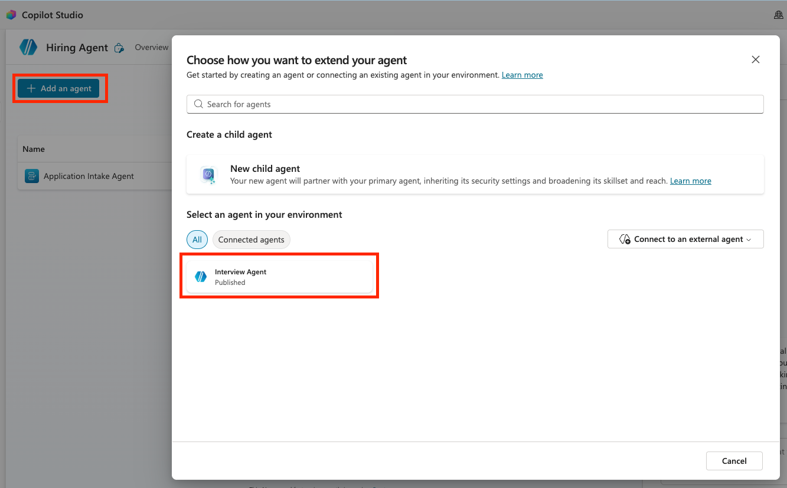
NOTE: If the Interview Agent is grayed out and not selectable then tht means it did not Publish. Go back to the Interview Agent and publish it first.
-
Set the Description to be:
Assists with the interview process and provides information about Resumes, Candidates, Job Roles, and Evaluation Criteria. Notice that the Pass conversation history to this agent is checked. This allows the parent agent to provide full context to the connected agent.
Notice that the Pass conversation history to this agent is checked. This allows the parent agent to provide full context to the connected agent. -
Select Add agent
-
Ensure that you see both the Application Intake Agent, and the Interview Agent. Notice how one is a child and the other is a connected agent.

3.2.4 Test multi-agent collaboration¶
-
Toggle the test panel open by selecting Test.
-
Upload one of the test resumes, and enter the following description which tell the parent agent what it can delegate to the connected agent:
Upload this resume, then show me open job roles, each with a description of the evaluation criteria, then use this to match the resume to at least one suitable job role even if not a perfect match.
-
Notice how the Hiring Agent delegated the upload to the child agent, and then asked the Interview Agent to provide a summary and job role match using its knowledge. Play with different ways of asking questions about Resumes, Job Roles and Evaluation Criteria. Examples:
🎉 Mission Complete¶
Excellent work, Agent! Operation Symphony is now complete. You've successfully transformed your single Hiring Agent into a sophisticated multi-agent orchestra with specialized capabilities.
Here's what you've accomplished in this mission:
✅ Multi-agent architecture mastery
You now understand when to use child agents vs connected agents and how to design systems that scale.
✅ Application Intake child agent
You've added a specialized child agent to your Hiring Agent that processes resumes, extracts candidate data, and stores information in Dataverse.
✅ Interview Prep connected agent
You've built a reusable connected agent for interview preparation and successfully connected it to your Hiring Agent.
✅ Agent communication
You've seen how your main agent can coordinate with specialist agents, share context, and orchestrate complex workflows.
✅ Foundation for autonomy
Your enhanced hiring system is now ready for the advanced features we'll add in upcoming missions: autonomous triggers, content moderation, and deep reasoning.
🚀Next up: In your next mission, you'll learn how to configure your agent to autonomously process resumes from emails!
⏩Move to Mission 04: Automate your agent with triggers
📚 Tactical Resources¶
📖 Work with Dataverse in Copilot Studio